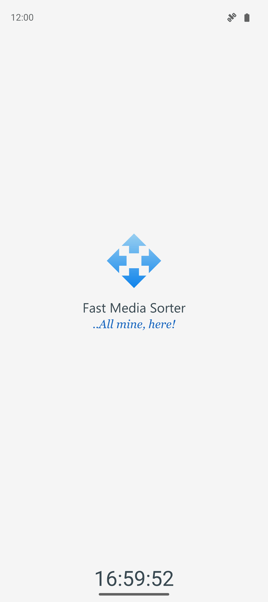
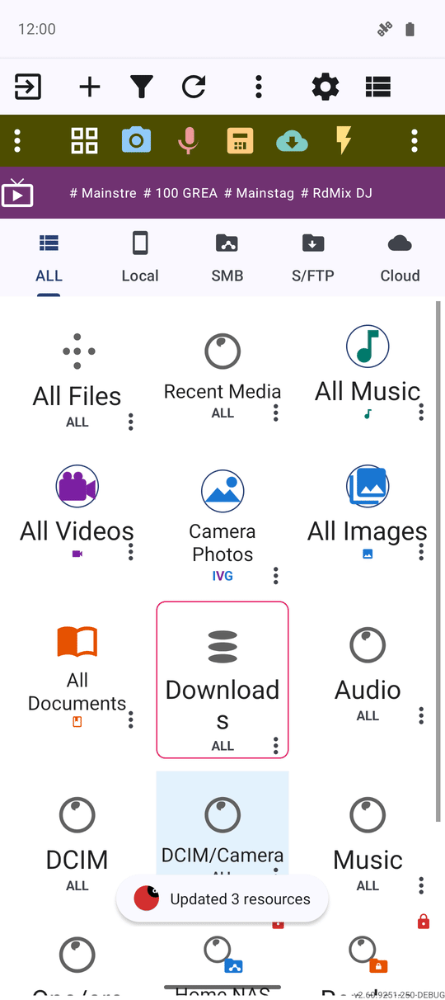

Краткий обзор возможностей
От установки FastMediaSorter и часов на первой заставке до путеводителя по всем рецептам — это пятиминутный экспресс-тур перед тем, как мастер первого запуска задаст вам свои вопросы.
Почему вам это понравится
Эта страница — краткая выжимка всей документации: где взять приложение, что вы увидите в первые секунды после нажатия на значок и какой рецепт открыть следующим в зависимости от ваших задач. Если мастер настройки — это знакомство с FastMediaSorter, то эта страница — пятиминутная прогулка по дому перед началом беседы.
Здесь не требуется принимать сложных решений. Это ознакомительный тур, а не контрольный список.
- ✓ Смартфон на Android, планшет, ТВ-приставка, головное устройство автомобиля или VR-гарнитура — FastMediaSorter работает везде в редакции, созданной специально под данное устройство.
- ✓ Способ установки: Google Play Store или загруженный файл APK для редакций, которые распространяются независимо.
- ✓ Для шага с папками Windows: работающее приложение Fast Media Sorter for Windows в той же локальной сети, что и ваш телефон.
Установка приложения
Редакция Standard доступна в каталоге Google Play, как и любые другие приложения: найдите FastMediaSorter через поиск или откройте прямую ссылку и нажмите кнопку Установить.
Другие редакции — noLegal, VR, Lite, Photos и Legacy — содержат возможности, выходящие за рамки правил каталогов приложений, поэтому они распространяются в виде прямых загрузок APK. Скачайте APK-файл со страницы GitHub Releases проекта или из репозитория IzzyOnDroid и откройте его на устройстве. Если Android впервые видит установку не из магазина, появится стандартное предупреждение — оно лишь сообщает о неизвестном ранее источнике файла, а не о проблемах внутри него. В руководстве Почему Android предупреждает об APK и что нажимать подробно разобраны оба системных экрана.
Первый экран — заставка с живыми часами
Запуск приложения встречает собственной стартовой заставкой: синий логотип с четырьмя стрелками плавно раскрывается по центру, а под ним появляются название приложения и девиз «..All mine, here!» на языке вашего устройства.
Прямо под логотипом идут секунды текущего времени в вашем системном 12- или 24-часовом формате и часовом поясе — они выглядят как продолжение системных часов, а не как отдельный секундомер приложения. Заставка отображается ровно столько, сколько занимает внутренняя инициализация: если всё готово мгновенно, она сразу исчезает вместе с часами, открывая рабочий экран. При самом первом запуске, который сразу ведёт в мастер настройки, заставка пропускается.

Под капотом заставки — быстрый и плавный старт
Пока горит заставка (и сразу после неё), приложение выполняет важную фоновую работу, которую вы замечаете как отсутствие задержек: сетка миниатюр не зависает при первой загрузке фото, поскольку модуль отрисовки картинок инициализируется в фоновом потоке, а параметры передачи файлов подгружаются по мере надобности, не перегружая построение главного экрана.
На совершенно чистой установке встроенные коллекции на главном экране — Вся музыка, Все видео, Все изображения, «Фото с камеры» и «Недавние медиа» — сразу показывают реальное количество файлов вместо нулей. FastMediaSorter автоматически подсчитывает эти виртуальные ресурсы в фоне прямо при старте, избавляя вас от необходимости заходить в каждую папку или запускать ручное сканирование.

Карта приложения по вашим задачам
Первая страница мастера настройки представляет FastMediaSorter через ключевые роли, и эта документация устроена точно так же. После знакомства с главным экраном вы можете сразу перейти к интересующему разделу:
- Файловый менеджер — просмотр, сортировка и работа с файлами начинаются с рецептов Сетка и список файлов и Копирование, перемещение и удаление.
- Плеер и просмотр — фото и GIF в просмотрщике изображений, видео в управлении воспроизведением видео, а музыка в воспроизведении и организации музыки.
- Любые источники — локальные, сетевые и облачные папки начинаются с настройки локальных хранилищ и сетевых ресурсов Windows (SMB).
- Интернет-трансляции (в поддерживаемых редакциях) — начинаются с каталога каналов.
- Дополнительно — лаунчер рабочего стола, приложение для часов, VR-гарнитуры и полная карта настроек, а также сравнение семи редакций.
Если на телефоне вы закрепили ключ хоста SFTP-сервера, приложение для часов автоматически применяет эту же проверку: сервер с другим ключом будет отклонён до отправки пароля. Привязка передаётся вместе с ресурсом, поэтому на самих часах ничего настраивать не нужно — см. Синхронизация данных со смарт-часами.
Подключение папок с вашего компьютера на Windows
Если на компьютере в той же сети запущен Fast Media Sorter for Windows, вам не придётся вручную вводить IP-адреса и пути: отсканируйте QR-код или откройте готовый файл .fmscfg, и FastMediaSorter моментально добавит папки с ПК как SFTP-ресурсы.
Повторный импорт того же файла конфигурации (например, после добавления новой общей папки на ПК) не создаёт дубликатов. Приложение сопоставляет сервер и путь к папке с уже имеющимися записями, обновляет их и показывает аккуратное уведомление: «Добавлено: <имя ресурса>», «Обновлено: <имя ресурса>» или «Ресурсы уже актуальны».

Что вы получите
Приложение установлено, вы понимаете информацию на стартовой заставке, встроенные коллекции сразу отображают реальное число файлов, и перед вами понятная карта документации для любых ваших задач: сортировки файлов, просмотра медиа или подключения папок с других устройств.
Советы и решение проблем
- Заставка честно отражает время запуска. Она отображается ровно столько, сколько занимает реальная загрузка: на мощном устройстве она исчезает почти мгновенно, без искусственных задержек.
- Никаких сторонних серверов и скрытой аналитики. У FastMediaSorter нет собственного облачного бэкенда; данные о том, как вы пользуетесь приложением, никуда не передаются без вашего ведома. Подробности см. в Политике конфиденциальности.
- Повторный импорт конфигурации компаньона абсолютно безопасен. Он лишь обновляет изменившиеся ресурсы и никогда не создаст дубликатов одной и той же папки на ПК.
- Случайно пропустили мастер настройки? Его можно открыть в любой момент в один клик из «Настроек» — см. Мастер первого запуска и настройки.